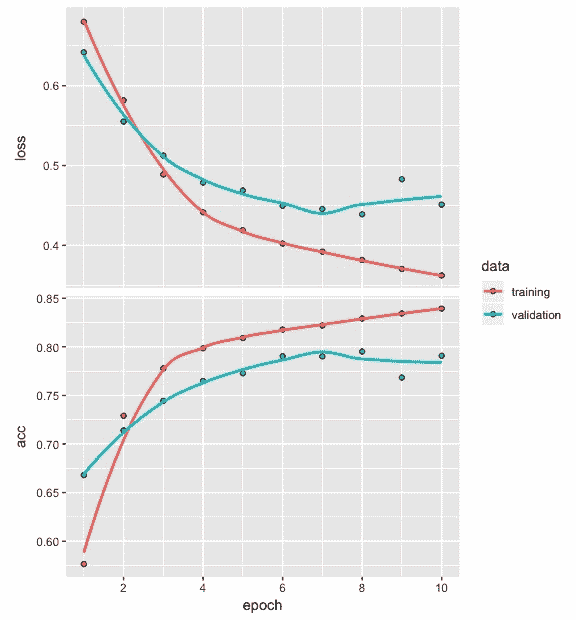
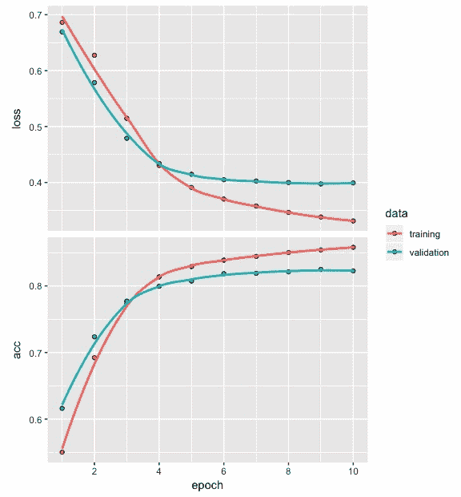

文本数据属于非结构化数据范畴。在开发深度网络模型时，由于此类数据的独特性质，我们需要完成额外的预处理步骤。在本章中，您将了解使用深度神经网络开发文本分类模型所需遵循的步骤。这个过程将通过简单易懂的例子来说明。文本数据，如客户评论、产品评论和电影评论，在商业中起着重要的作用，文本分类是一个重要的深度学习问题。
在本章中，我们将讨论两个文本数据集，了解在开发深度网络分类模型时如何准备文本数据，查看IMDb电影评论数据，开发深度网络架构，拟合和评估模型，并讨论一些技巧和最佳实践。更具体地说，在本章中，我们将讨论以下主题:
当我们想练习开发深度网络模型时，可以使用文本数据。这种数据可以从几个公开来源获得。在本节中，我们将介绍两种这样的资源:
以下链接提供了包含文本句子的各种数据集，这些文本句子是从产品评论(来自Amazon.com)、电影评论(来自【IMDB.com】T2)和餐馆评论(来自yelp.com)中提取的:https://archive . ics . UCI . edu/ml/datasets/情操+标签+句子。
每个句子都根据评论中表达的观点进行标注。这种情绪要么是正面的，要么是负面的。对于每个网站，有500个正面句子和500个负面句子，这意味着总共有3000个标记句子。这些数据可用于开发情感分类深度网络模型，该模型可帮助我们自动将客户评论分类为正面或负面。
以下是一些来自IMDb的负面评论的示例，这些负面评论被标记为0:
以下是一些来自IMDb的正面评价的例子，它们被标记为1:
以下是亚马逊一些被标为0的负面评价的例子:
以下是一些来自亚马逊的正面评价的例子，它们被标为1:
Keras中有两个文本数据集，如下所示:
IMDb评论数据包含25，000个被分类为包含正面或负面情绪的评论。这些数据已经过预处理，每个评论都被编码成一个整数序列。路透社新闻专线的主题分类数据包含11，228条新闻专线，这些新闻专线也经过了预处理，每条新闻专线都被编码为一个整数序列。新闻专线被分为46组或46个主题，如牲畜、黄金、住房、工作。
以下是来自Keras的IMDb数据的正面电影评论示例:
《简》这部简单明了的改编电影中奢华的制作价值和扎实的表演？讽刺经典关于阶级内部和阶级之间的婚姻游戏。18世纪英国诺瑟姆和帕特洛是一个？混合物作为朋友谁必须通过？和谎言，发现他们彼此相爱的好心情是一种吗？美德对解释。老化的原始资料，它的粗糙程度已经降低了一点？我喜欢这部电影的外观和镜头的设置，我认为它没有太依赖于？像80年代和90年代的大多数电影一样，头部特写的效果非常好。”
以下是来自Keras的IMDb数据的负面电影评论示例:
我一生中最糟糕的错误br br我在塔吉特百货买了这部电影，因为我想嘿，这是桑德勒，我可以得到一些廉价的笑声我错了，完全错了在电影进行到一半的时候，我的三个朋友都睡着了，我仍然在忍受最糟糕的情节最糟糕的剧本我看过最糟糕的电影我想用头撞墙一个小时，然后我会停下来，你知道为什么吗，因为这感觉真他妈的好，当我把我的头撞进去的时候，我把那该死的电影卡在里面？看着它燃烧，这种感觉比我做过的任何事情都要好得多。美国的黑暗心理军队杀了比尔，只是为了忘掉那些废话。我恨你，桑德勒，你真的经历了这些，毁了我一整天的生活。”
为了准备用于模型构建的数据，我们需要遵循以下步骤:
为了说明数据准备中涉及的步骤，我们将利用一个非常小的文本数据集，其中包含与2017年9月苹果iPhone X发布时间相关的五条推文。我们将使用这个小数据集来了解数据准备中涉及的步骤，然后我们将切换到一个更大的IMDb数据集，以便构建深度网络分类模型。以下是我们将要存储在t1到t5中的五条推文:
t1 <- "I'm not a huge $AAPL fan but $160 stock closes down $0.60 for the day on huge volume isn't really bearish"
t2 <- "$AAPL $BAC not sure what more dissapointing: the new iphones or the presentation for the new iphones?"
t3 <- "IMO, $AAPL animated emojis will be the death of $SNAP."
t4 <- "$AAPL get on board. It's going to 175. I think wall st will have issues as aapl pushes 1 trillion dollar valuation but 175 is in the cards"
t5 <- "In the AR vs. VR battle, $AAPL just put its chips behind AR in a big way."
前面的推文包括小写和大写的文本、标点符号、数字和特殊字符。
推文中的每个单词或数字都是一个令牌，将推文拆分成令牌的过程称为令牌化。用于执行令牌化的代码如下:
tweets <- c(t1, t2, t3, t4, t5)
token <- text_tokenizer(num_words = 10) %>%
fit_text_tokenizer(tweets)
token$index_word[1:3]
$`1`
[1] "the"
$`2`
[1] "aapl"
$`3`
[1] "in"
从前面的代码中，我们可以看到以下内容:
注意，具有高频率的单词对于文本分类可能重要，也可能不重要。
下面的代码用于将文本转换成整数序列。还提供了输出:
seq <- texts_to_sequences(token, tweets)
seq
[[1]]
[1] 4 5 6 2 7 8 1 9 6
[[2]]
[1] 2 4 1 1 8 1
[[3]]
[1] 2 1
[[4]]
[1] 2 9 2 7 3 1
[[5]]
[1] 3 1 2 3 5
从前面的代码中，我们可以看到以下内容:
使所有整数序列相等的代码如下:
pad_seq <- pad_sequences(seq, maxlen = 5)
pad_seq
[,1] [,2] [,3] [,4] [,5]
[1,] 7 8 1 9 6
[2,] 4 1 1 8 1
[3,] 0 0 0 2 1
[4,] 9 2 7 3 1
[5,] 3 1 2 3 5
从前面的代码中，我们可以看到以下内容:
在某些情况下，您可能更喜欢在整数序列的末尾截断或添加零。实现这一点的代码如下:
pad_seq <- pad_sequences(seq, maxlen = 5, padding = 'post')
pad_seq
[,1] [,2] [,3] [,4] [,5]
[1,] 7 8 1 9 6
[2,] 4 1 1 8 1
[3,] 2 1 0 0 0
[4,] 9 2 7 3 1
[5,] 3 1 2 3 5
在前面的代码中，我们将填充指定为post。这种类型的填充的影响可以在输出中看到，其中在序列3的末尾添加了零，加起来小于5。
为了开发一个tweet情感分类模型，我们需要为每条tweet添加标签。然而，获得准确反映推特情绪的标签具有挑战性。让我们看看一些现有的情感分类词汇，看看为什么不容易得到合适的标签。仅凭五条推文，不可能开发出一个情感分类模型。然而，这里的想法是查看为每个tweet找到合适标签的过程。这将有助于我们理解获得准确标签所面临的挑战。为了自动提取每条推文的情感分数，我们将使用syuzhet包。为此，我们还将利用常用的词汇。国家研究委员会 ( NRC )词典有助于捕捉基于特定词汇的各种情绪。我们将使用以下代码来获得五条推文的情感得分:
library(syuzhet)
get_nrc_sentiment(tweets)
anger anticipation disgust fear joy sadness surprise trust negative positive
1 1 0 0 1 0 0 0 0 0 0
2 0 0 0 0 0 0 0 0 0 0
3 1 1 1 1 1 1 1 0 1 1
4 0 1 0 0 0 0 0 0 0 0
5 1 0 0 0 0 0 0 0 1 0
第一条推文的愤怒和恐惧得分均为1。虽然它包含单词'bearish'，但如果我们阅读这条推文，我们会确定它实际上是积极的。
让我们看看下面的代码，它包含了单词'bearish'、'death'和'animated'的情感分数:
get_nrc_sentiment('bearish')
anger anticipation disgust fear joy sadness surprise trust negative positive
1 1 0 0 1 0 0 0 0 0 0
get_nrc_sentiment('death')
anger anticipation disgust fear joy sadness surprise trust negative positive
1 1 1 1 1 0 1 1 0 1 0
get_nrc_sentiment('animated')
anger anticipation disgust fear joy sadness surprise trust negative positive
1 0 0 0 0 1 0 0 0 0 1
从前面的代码中，我们可以确定以下内容:
当我们用负面情绪(用0表示)和正面情绪(用1表示)手动标记五条推文中的每一条时，我们很可能会得到1、0、1、1和1的分数。让我们使用下面的代码，通过使用syuzhet、bing和afinn词汇来得出这些情感分数:
get_sentiment(tweets, method="syuzhet")
[1] 0.00 0.80 -0.35 0.00 -0.25
get_sentiment(tweets, method="bing")
[1] -1 0 -1 -1 0
get_sentiment(tweets, method="afinn")
[1] 4 0 -2 0 0
查看来自syuzhet、bing和afinn词汇库的结果，我们可以观察到以下情况:
尽管我们不会仅仅基于五条推文开发一个分类模型，但让我们看看模型架构的代码:
model <- keras_model_sequential()
model %>% layer_embedding(input_dim = 10,
output_dim = 8,
input_length = 5)
summary(model)
OUTPUT
__________________________________________________________________________________
Layer (type) Output Shape Param #
==================================================================================
embedding_1 (Embedding) (None, 5, 8) 80
==================================================================================
Total params: 80
Trainable params: 80
Non-trainable params: 0
________________________________________________________________________________
print(model$get_weights(), digits = 2)
[[1]]
[,1] [,2] [,3] [,4] [,5] [,6] [,7] [,8]
[1,] 0.0055 -0.0364 -0.0475 0.049 -0.0139 -0.0114 -0.0452 -0.0298
[2,] 0.0398 -0.0143 -0.0406 0.023 -0.0496 -0.0124 0.0087 -0.0104
[3,] 0.0370 -0.0321 -0.0491 -0.021 -0.0214 0.0391 0.0428 -0.0398
[4,] -0.0257 0.0294 0.0433 0.048 0.0259 -0.0323 -0.0308 0.0224
[5,] -0.0079 -0.0255 0.0164 0.023 -0.0486 0.0273 0.0245 -0.0020
[6,] 0.0372 0.0464 0.0454 -0.020 0.0086 -0.0375 -0.0188 0.0395
[7,] 0.0293 0.0305 0.0130 0.037 -0.0324 -0.0069 -0.0248 0.0178
[8,] -0.0116 -0.0087 -0.0344 0.027 0.0132 0.0430 -0.0196 -0.0356
[9,] 0.0314 -0.0315 0.0074 -0.044 -0.0198 -0.0135 -0.0353 0.0081
[10,] 0.0426 0.0199 -0.0306 -0.049 0.0259 -0.0341 -0.0155 0.0147
从前面的代码中，我们可以观察到以下内容:
请注意，每次初始化模型时，这些权重都会改变。
现在，我们将利用IMDb电影评论数据，其中每个评论的情绪已经被标记为积极或消极。从Keras访问IMDb电影评论数据的代码如下:
imdb <- dataset_imdb(num_words = 500)
c(c(train_x, train_y), c(test_x, test_y)) %<-% imdb
z <- NULL
for (i in 1:25000) {z[i] <- print(length(train_x[[i]]))}
summary(z)
Min. 1st Qu. Median Mean 3rd Qu. Max.
11.0 130.0 178.0 238.7 291.0 2494.0
从前面的代码中，我们可以观察到以下内容:
训练数据序列长度的直方图可以绘制如下:
前面的整数序列长度直方图显示了一个右偏模式。大多数序列的整数少于500。
接下来，我们将使用以下代码使整数序列的长度相等:
train_x <- pad_sequences(train_x, maxlen = 100)
test_x <- pad_sequences(test_x, maxlen = 100)
从前面的代码中，我们可以观察到以下内容:
现在，我们准备建立一个分类模型。
对于模型架构和模型摘要，我们将使用以下代码:
model <- keras_model_sequential()
model %>% layer_embedding(input_dim = 500,
output_dim = 16,
input_length = 100) %>%
layer_flatten() %>%
layer_dense(units = 16, activation = 'relu') %>%
layer_dense(units = 1, activation = "sigmoid")
summary(model)
OUTPUT
___________________________________________________________________
Layer (type) Output Shape Param #
===================================================================
embedding_12 (Embedding) (None, 100, 16) 8000
___________________________________________________________________
flatten_3 (Flatten) (None, 1600) 0
___________________________________________________________________
dense_6 (Dense) (None, 16) 25616
___________________________________________________________________
dense_7 (Dense) (None, 1) 17
===================================================================
Total params: 33,633
Trainable params: 33,633
Non-trainable params: 0
___________________________________________________________________
从前面的代码中，我们可以观察到以下内容:
现在，我们可以编译模型了。
我们需要使用以下代码来编译模型:
model %>% compile(optimizer = "rmsprop",
loss = "binary_crossentropy",
metrics = c("acc"))
从前面的代码中，我们可以观察到以下内容:
现在，让我们开始拟合模型。
我们需要使用以下代码来拟合模型:
model_1 <- model %>% fit(train_x, train_y,
epochs = 10,
batch_size = 128,
validation_split = 0.2)
plot(model_1)
如前面的代码所示，我们使用train_x和train_y来拟合模型，以及10时期和128的批量大小。我们使用20%的训练数据来评估模型在损失和准确性值方面的性能。拟合模型后，我们获得了损失和精度图，如下图所示:

从前面的图中，我们可以观察到以下情况:
为了克服这个过度拟合的问题，我们需要修改前面的代码，使其如下所示:
model <- keras_model_sequential()
model %>% layer_embedding(input_dim = 500,
output_dim = 16,
input_length = 100) %>%
layer_flatten() %>%
layer_dense(units = 16, activation = 'relu') %>%
layer_dense(units = 1, activation = "sigmoid")
model %>% compile(optimizer = "rmsprop",
loss = "binary_crossentropy",
metrics = c("acc"))
model_2 <- model %>% fit(train_x, train_y,
epochs = 10,
batch_size = 512,
validation_split = 0.2)
plot(model_2)
查看前面的代码，我们可以观察到以下内容:
拟合模型后，存储在model_2中的损耗和精度值被绘制出来，如下图所示:

从前面的图中，我们可以观察到以下情况:
我们将使用这个模型进行评估和预测。
现在，我们将使用训练和测试数据来评估模型，以获得损失、准确性和混淆矩阵。我们的目标是获得一个模型，可以将电影评论中包含的情感分为正面或负面。
从训练数据中获取损失值和精度值的代码如下:
model %>% evaluate(train_x, train_y)
$loss
[1] 0.3745659
$acc
[1] 0.83428
我们可以看到，对于训练数据，损失和精度分别是0.375和0.834。为了更深入地了解模型的情感分类性能，我们需要开发一个混淆矩阵。为此，请使用以下代码:
pred <- model %>% predict_classes(train_x)
table(Predicted=pred, Actual=imdb$train$y)
Actual
Predicted 0 1
0 11128 2771
1 1372 9729
在前面的代码中，我们预测训练数据的类正在使用该模型，并将结果与电影评论的实际情感类进行比较。这在混淆矩阵中进行了总结。我们可以对混淆矩阵进行如下观察:
接下来，我们将对测试数据重复这个过程。
从测试数据中获取损耗和精度值的代码如下:
model %>% evaluate(test_x, test_y)
$loss
[1] 0.4431483
$acc
[1] 0.79356
我们可以看到，就测试数据而言，损耗和精度分别为0.443和0.794。这些结果比从训练数据中获得的结果稍差。我们可以使用模型预测test数据的类别，并将它们与电影评论的实际类别进行比较。这可以总结为一个混淆矩阵，如下所示:
pred1 <- model %>% predict_classes(test_x)
table(Predicted=pred1, Actual=imdb$test$y)
Actual
Predicted 0 1
0 10586 3247
1 1914 9253
从前面的混淆矩阵中，我们可以观察到以下情况:
在下一节中，我们将探索性能优化技巧和最佳实践。
现在我们已经获得了测试数据的电影评论分类准确率，即79%，我们可以进一步提高这个准确率。实现这样的改进可能涉及对模型架构中的参数、我们编译模型时使用的参数和/或我们拟合模型时使用的设置进行试验。在本节中，我们将通过改变单词序列的最大长度来进行实验，同时，使用与我们在之前的模型中使用的优化器不同的优化器。
让我们首先使用以下代码为表示电影评论及其标签的整数序列创建train和test数据:
c(c(train_x, train_y), c(test_x, test_y)) %<-% imdb
z <- NULL
for (i in 1:25000) {z[i] <- print(length(train_x[[i]]))}
summary(z)
Min. 1st Qu. Median Mean 3rd Qu. Max.
11.0 130.0 178.0 238.7 291.0 2494.0
在前面的代码中，我们根据z中的训练数据存储序列的长度。通过这样做，我们得到了z的摘要。从这里，我们可以获得数字汇总值，如最小值、第一个四分位数、中值、平均值、第三个四分位数和最大值。单词序列的中值是178。在前面的部分中，我们在填充序列时使用了最大长度100，以使它们长度相等。在这个实验中，我们将把它增加到200，这样我们就有一个更接近中值的数字，如下面的代码所示:
imdb <;- dataset_imdb(num_words = 500)
c(c(train_x, train_y), c(test_x, test_y)) %<-% imdb
train_x <- pad_sequences(train_x, maxlen = 200)
test_x <- pad_sequences(test_x, maxlen = 200)
model <- keras_model_sequential()
model %>% layer_embedding(input_dim = 500,
output_dim = 16,
input_length = 200) %>%
layer_flatten() %>%
layer_dense(units = 16, activation = 'relu') %>%
layer_dense(units = 1, activation = "sigmoid")
model %>% compile(optimizer = "adamax",
loss = "binary_crossentropy",
metrics = c("acc"))
model_3 <- model %>% fit(train_x, train_y,
epochs = 10,
batch_size = 512,
validation_split = 0.2)
plot(model_3)
我们要做的另一个改变是在编译模型时使用adamax优化器。注意，这是流行的adam优化器的变体。我们保持其他一切不变。训练模型后，我们绘制了最终的损失和准确度，如下图所示:

从前面的损耗和精度图中，我们可以观察到以下情况:
接下来，我们需要使用以下代码根据测试数据计算损耗和精度:
model %>% evaluate(test_x, test_y)
$loss
[1] 0.3906249
$acc
[1] 0.82468
查看前面的代码，我们可以观察到以下内容:
为了进一步了解模型的情感分类性能，我们可以使用以下代码:
pred1 <- model %>% predict_classes(test_x)
table(Predicted=pred1, Actual=imdb$test$y)
Actual
Predicted 0 1
0 9970 1853
1 2530 10647
从前面基于测试数据电影评论的混淆矩阵中，我们可以观察到以下情况:
在这里，对最大序列长度和用于编译模型的优化器类型进行试验，提高了情感分类性能。我们鼓励您继续尝试并改进模型的情感分类性能。
在这一章中，我们从开发用于文本分类的深度神经网络开始。由于文本数据的独特特征，在可以开发深度神经网络情感分类模型之前，需要几个额外的预处理步骤。我们使用五条tweets的小样本来检查预处理步骤，包括标记化、将文本数据转换为整数序列，以及填充/截断以达到相同的序列长度。我们还强调，用适当的情感自动标记文本序列是一个具有挑战性的问题，一般的词典可能无法提供有用的结果。
为了开发一个深度网络情感分类模型，我们转向了一个更大的现成的IMDb电影评论数据集，它是Keras的一部分。为了优化模型的性能，我们还试验了一些参数，比如数据准备时的最大序列长度，以及用于编译模型的优化器的类型。这些实验产生了不错的结果；但是，我们将继续探索这些数据，以便我们可以进一步改进深度网络模型的情感分类性能。
在下一章中，我们将利用递归神经网络分类模型，它更适合处理涉及序列的数据。